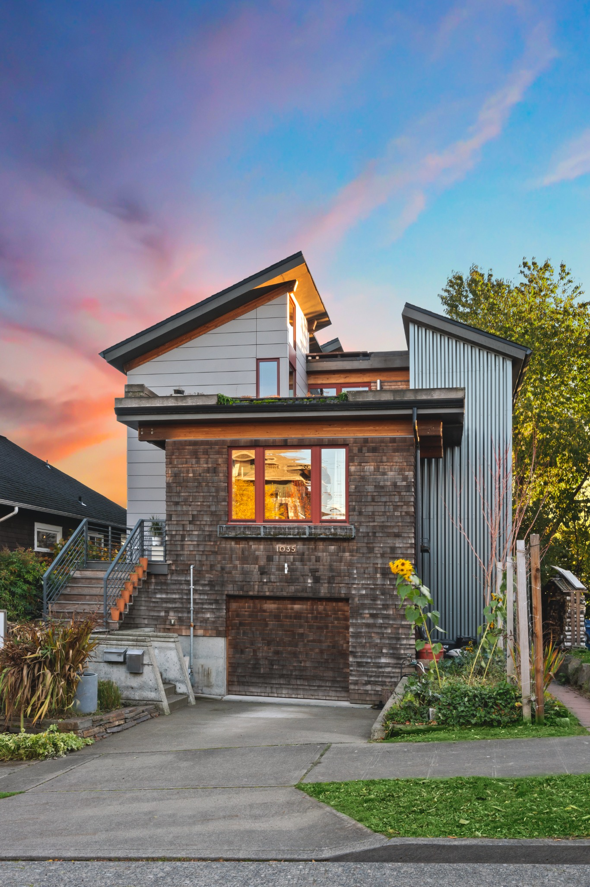
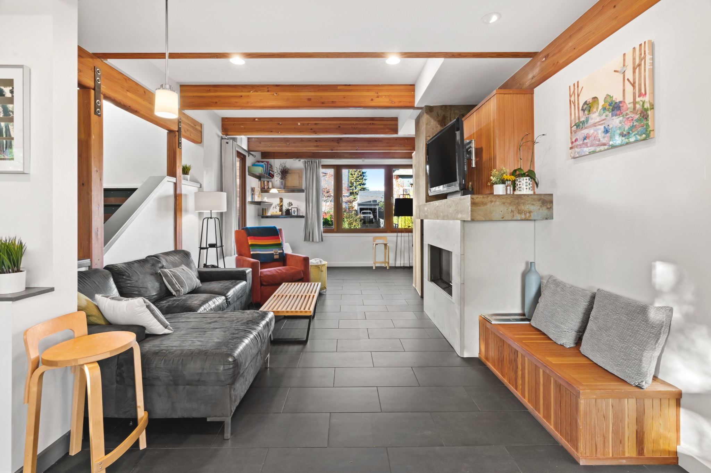
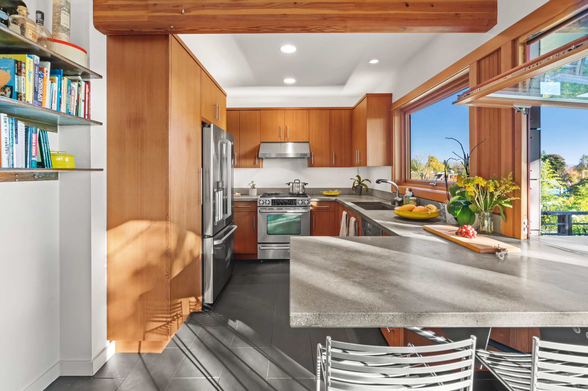
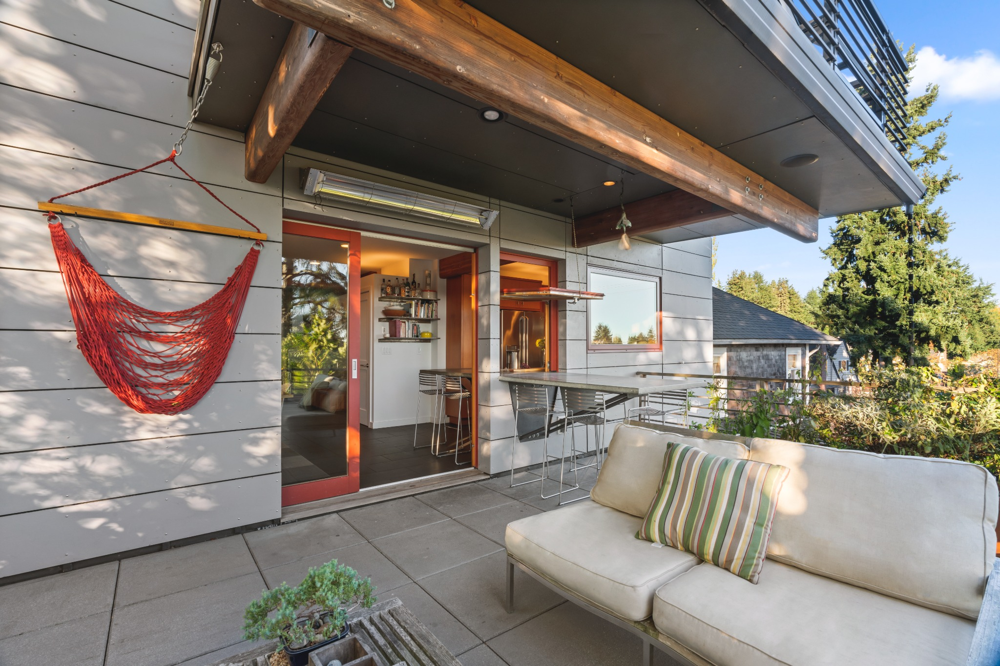
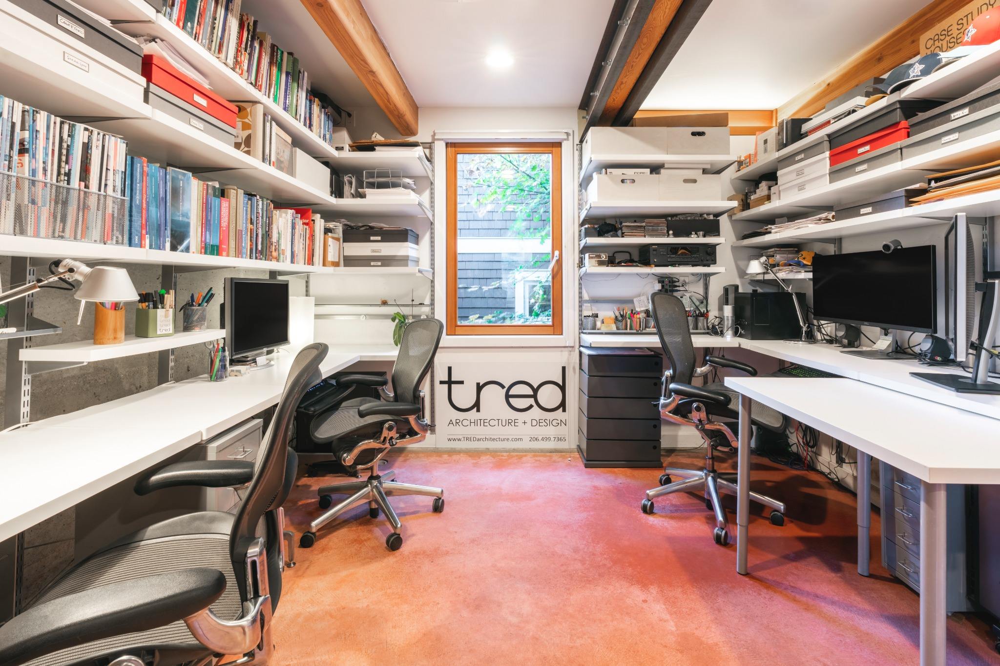
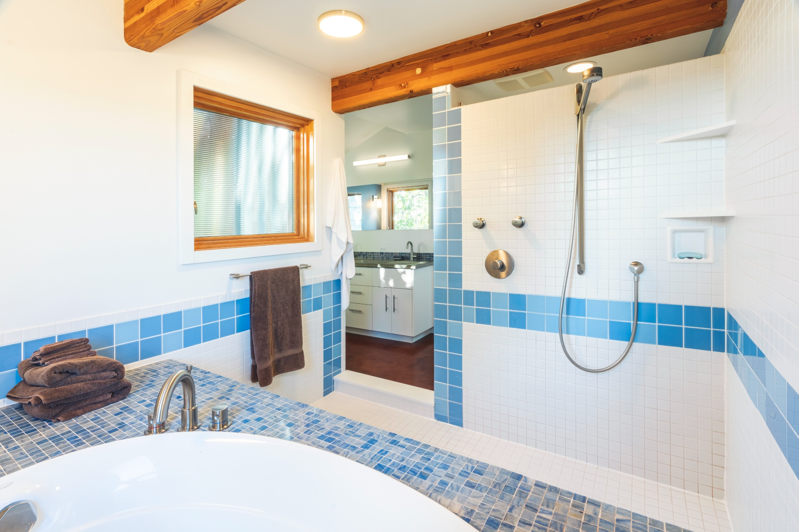

Roosevelt · Seattle
The Architect's House
1035 NE 71st Street
Architect's home with warm materials, expansive views, exceptional indoor-outdoor living, and just a few blocks from Roosevelt Light Rail.
The Home
Designed for daylight, flexibility, and city connection.
Designed as the architect's own home, 1035 NE 71st blends exposed wood structure, fir paneling, generous glass, and flexible living spaces across the main home and a fully separated daylight studio. The result is a warm modern house that feels connected to its neighborhood, the city, and the landscape beyond.





Architecture
Warm modern materials and durable everyday performance.
Large south-facing entertaining deck
Panoramic views of the Cascades, Mount Rainier, downtown Seattle, and the Olympics
Open living spaces with exposed wood beams and fir paneling
Dedicated office and flexible lower-level spaces
Hydronic radiant floor heating and high-efficiency combi boiler installed in 2024
Excellent natural ventilation complemented by air conditioning on the upper floor
Cork, tile, and integrally dyed concrete flooring
Lower-level garage with heated floors for flexible use
On the Property
Main home plus separated daylight studio.
The property includes the main home plus a small daylight basement studio that is fully separated, with its own entrance and outdoor area. It can function independently and is included in the total property statistics shown here.
Neighborhood
Walkable, connected, and close to daily life.
Set in Seattle's Roosevelt neighborhood, the home is close to Roosevelt Light Rail, Green Lake, Ravenna Park, neighborhood restaurants, coffee shops, schools, and everyday services.
Available for Lease
1035 NE 71st Street
- Rent
- $5,950 / month
- Availability
- August 2026
- Bedrooms
- 5 total
- Bathrooms
- 3.5 total
- Living Area
- Approx. 3,065 SF total
- Parking
- Lower-level garage
- Studio
- Fully separated daylight studio included in total property statistics
For leasing details, showing information, and application instructions, contact Lee Edwards / TRED Architecture + Design.
Suggested future contact address: hello@1035ne71st.com